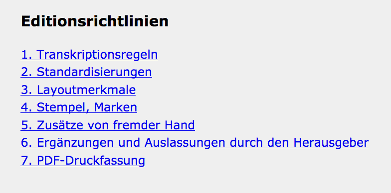
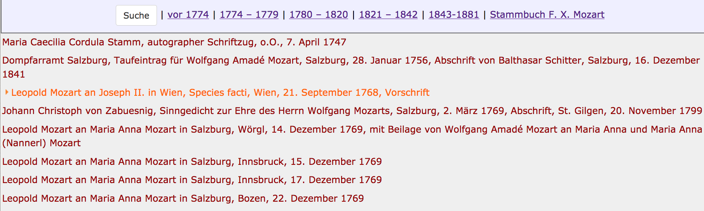
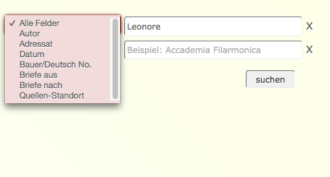
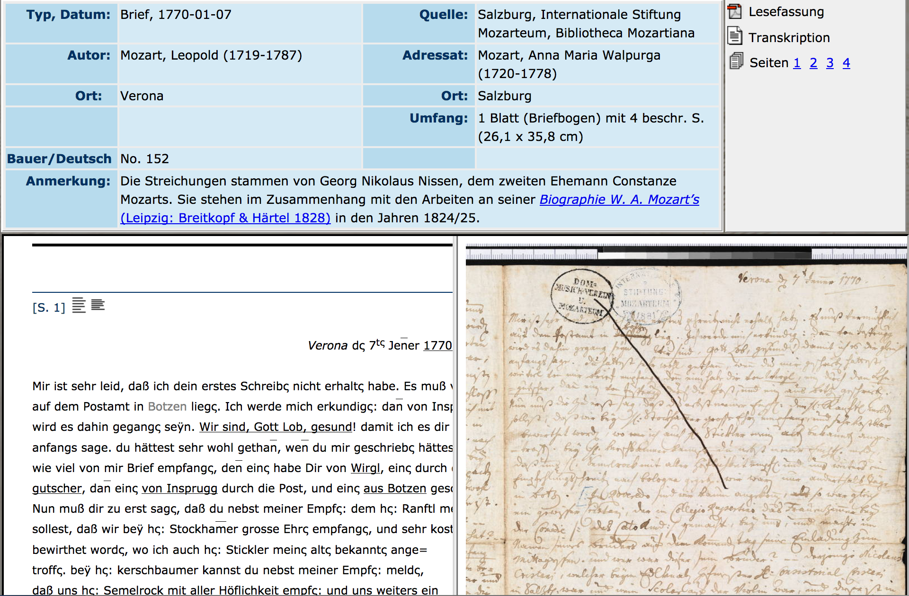
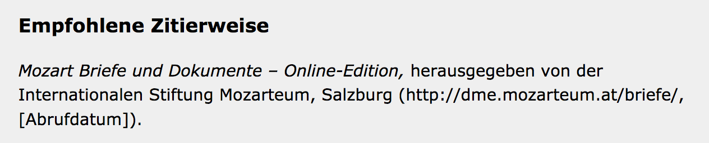

Mozart Briefe und Dokumente - Online-Edition
Table of Contents
Abstract
The Salzburg Mozarteum Foundation in cooperation with the Packard Humanities Institute, Los Altos (California) has digitized historical letters and documents of the Mozart family. The goal of the project is the online publication of all letters and documents related to the Mozart family as well as related letters and documents spanning from 1740 to 1880. The digital edition has achieved these objectives, but does not fully exploit its potential. This review gives an overview to the presented online publication of Mozarts correspondance, its appearance, a discussion of the editorial content, the projects targets and methods.
Einleitung
Die digitale Edition „Mozarts Briefe und Dokumente“ wird im Rahmen der Digitalen Mozart Edition (DME) durch die Stiftung Mozarteum Salzburg herausgegeben. Die Edition ist erreichbar unter: http://dme.mozarteum.at/DME/main/cms.php?tid=110&sec=briefe.1 Aus dem Impressum geht hervor, dass das Projekt seit 2006 besteht, zur Entstehung und dem Verlauf des Projektes bzw. zum zeitlichen Horizont werden leider keine Angaben gemacht.
Gegenstand der Publikation sind Briefe und Dokumente zur Mozart-Familie aus der Zeit zwischen 1740 und 1880 in Bild und Text. Die Stiftung Mozarteum Salzburg verwahrt die größte Sammlung an Dokumenten der Mozartfamilie weltweit. Die Dokumente wurden in den letzten Jahren nach und nach mit den Mitteln der neuesten Technik digitalisiert, um sie einem breiteren Publikum zugänglich zu machen. Neben den eigenen Beständen sollen aber auch weiterhin andere Schriftstücke aufgenommen werden, die gar nicht oder nur teilweise in der gedruckten, von Bauer und Deutsch bearbeiteten, Gesamtausgabe erschienen sind. Es geht hierbei um die Integration von „Schätzen“2 in den Onlineauftritt und den damit verbundenen Aufruf an die Besitzer dieser Schätze, jene bereitzustellen und der Öffentlichkeit zur Verfügung zu stellen. Damit soll eine „Lücke“ (zum Beispiel die Edition der Korrespondenz bis zum Jahre 1858, die in der Gesamtausgabe nur in Auszügen vorhanden ist) gefüllt werden und einen größeren Kreis von Interessenten ansprechen.
Offizielle Förderer des Projekts sind die Stiftung Mozarteum Salzburg3 und das Packard Humanities Institute4. Als Herausgeber der Briefe-Edition wird die DME genannt, darunter werden sieben Mitarbeiter inklusive Leitung und IT-Entwicklung aufgeführt.5 Ausführlichere Angaben zu den Laufzeiten oder Zuständigkeiten werden in diesem Zusammenhang nicht gemacht. Es wäre zum Beispiel von Interesse, wie das Teilprojekt entstanden ist und in welcher Beziehung es zu anderen Projekten – nicht nur innerhalb der DME – steht.
Das Gesamtprojekt Digitale Mozart-Edition „strebt eine interne Vernetzung der digitalen Ressourcen der ISM an und stellt Schnittstellen für externe Services bereit.“6 Wie genau diese interne Vernetzung zu verstehen ist, oder wie die Verknüpfung zu anderen Projekten wie zum Beispiel „Mozart im Spiegel des frühen Musikjournalismus“7 oder zur Neuen Mozart-Ausgabe (NMA)8 aussieht, wird nicht weiter ausgeführt.
„Die DME zielt darauf ab, das gesamte Schaffen Wolfgang Amadé Mozarts (1756–1791) in digitaler Form weltweit für jedermann über das Internet zum Studium und zu Aufführungszwecken zur Verfügung zu stellen.“9 Die recht kurz gehaltenen Beschreibungen aller Teilprojekte legen nahe, dass es sich bei allen Ausgaben um reine Digitalisierungsprojekte handelt.
Die letzte Aktualisierung aller Seiten ist im Mai bzw. Juni 201710 vorgenommen worden. Neuere Beiträge, Aktuelles zum Projektverlauf oder ähnliche Informationen sowie die regelmäßige Pflege der Seiten wären eine positive Bereicherung der Seiten.
Gegenstand und Inhalte der Edition
Alle bekannten und zugänglichen Briefe von Leopold und Wolfgang Amadé Mozart sind von Wilhelm A. Bauer und Otto Erich Deutsch herausgegeben und seit 1962 im Druck veröffentlicht worden.11 Ziel des Projektes ist es, diese digital aufzubereiten und online bereitzustellen.12 Ausgewählt worden sind zunächst die Materialien, die in Salzburg vorhanden sind und mit denen vor einigen Jahren begonnen wurde, sie „auf dem neusten Stand der Technik zu digitalisieren“.13. Dabei handelt es sich bei dem Material um Briefe und Dokumente der Mozart-Familie zwischen 1740 und 1880 in Bild und Text. Für wissenschaftliche Editionen, insbesondere für die digitalen, ist dies sicherlich eine Herausforderung, da neben der Fülle der Materialien Digitalisierungsstandards sowie bereits bestehende analoge Editionen berücksichtigt werden müssen. Darüber hinaus ist „langfristig die Neuedition“ die Quellen geplant, was eine neue Zugangs- und Betrachtungsweise der Gegenstände vermuten lässt.14
Die Materialien sind systematisch aufbereitet, indem die Briefe in Gruppen aufgeteilt wurden. Darunter Briefe der Mozart-Familie bis 1791 (in weiteren Rubriken Reisebriefe, Briefe der Wiener Zeit und Briefe von Leopold Mozart an Maria Anna Berchtold zu Sonnenburg 1784 bis 1787), weiterhin Briefe und Dokumente der Mozart-Familie 1792 bis 1858, dann Briefe und Dokumente zur Institutionsgeschichte aus der Zeit 1841 bis 1880 und schließlich das Stammbuch von Franz Xaver Wolfgang Mozart (1801 bis 1812). Zu jeder Gruppe gibt es eine sehr kurze Einführung sowie eine Auflistung der einzelnen Dokumente. Am Ende der Seite bekommt der Leser die Information, es seien derzeit 1128 Dokumente online verfügbar und das letzte Update im Juni 2016 vorgenommen worden. Somit stellt sich die Frage, ob bis dahin sämtliche Materialien aus dem Besitz der Stiftung bereits digitalisiert worden sind und es deshalb keine weiteren Einträge geben wird? In diesem Fall wäre eine abschließende Bemerkung wünschenswert.
Ziele und Methoden
In der digitalen Edition werden Methoden und Konzepte des Projektes nicht explizit genannt oder dokumentiert. Die Ausgabe habe sich zum Ziel gesetzt, sämtliche Briefe und Aufzeichnungen der Mozart-Familie, die im Besitz der Stiftung Mozarteum Salzburg verwahrt werden, in der Edition online verfügbar zu machen. Darüber hinaus soll ein reichhaltiger Dokumentenbestand (Korrespondenzen, Stammbuchblätter, Quittungen etc.) mit aufgenommen werden, doch werden keinerlei Angaben dazu gemacht, in welcher Form oder mit welchen Mitteln dies umgesetzt wird, bzw. was der Mehrwert der Ausgabe in ihrer digitalen Form ist. Es wird darauf hingewiesen, dass die Digitalisierung mit den neusten technischen Methoden vorgenommen würde und bereits seit längerer Zeit umgesetzt wird, die gedruckten Editionen werden demnach identisch übernommen.

Unter Dokumente werden nun sämtliche Materialien aufgelistet und verlinkt. In dieser Liste wird am unteren Bildrand darauf hingewiesen, dass es sich um 1055 Dokumente handelt, was ein wenig verwirrend ist, da auf der Seite zum Projektstand die Zahl 1128 genannt wird. Die Erschließung der einzelnen Quellen beinhaltet neben Titel, Autor, Adressat, Jahresdaten und Ort, mitunter eine Anmerkung zum Brief insgesamt, außerdem Informationen über den Standort und ggf. einen Link zur Quelle (sofern online verfügbar). Von einer darüber hinaus gehenden kritischen Quellenbegutachtung wird abgesehen. Mögliche Querverbindungen, Erkenntnisse aus den Dokument-Inhalten und sonstige etwaige Informationen zum Umgang mit den Quellen, zu Bearbeitungsstadien etc. werden nicht aufgeführt. Natürlich könnten beschränkte personelle Ressourcen hierfür ein Grund sein, doch wären solche oder ähnliche Informationen über eine physische Quellenbeschreibung hinaus sicher bereichernd.
Eine Modellierung der digitalen editorischen Methodik ist insofern nicht möglich, als dass gar kein Bedarf besteht. Die Materialien werden in einer diplomatischen Transkription wiedergegeben, was laut Projektstand ausschließlich im HTML-Format geschieht und innerhalb dieses Formats wird zwischen dem ursprünglichen Dokumenttext und später hinzugefügten Annotationen unterschieden.16 Hier stellt sich bereits die Frage nach dem Grund für die Wahl des Zielformates, zu der es keine weiteren Angaben gibt. Naheliegend wäre zum Beispiel eine Auszeichnung nach den Richtlinien der Text Encoding Initiative, insbesondere da auf eine „Neuedition der Quellen“ hingewiesen wird.17 Datenmodellierung oder die Dokumentation eines Datenmodells sind dementsprechend nicht notwendig. Die Transkriptionen bzw. Materialien sind nicht weiter aufbereitet, anscheinend nicht mit Normdaten zu Personen, Orten etc. angereichert.18 Es gibt ferner keine Ansicht zum Quelltext. Da keine Angaben dazu gemacht werden, besteht natürlich die Möglichkeit, dass die Daten bereits in anderen Formaten vorliegen, diese aber (noch) nicht bereitgestellt wurden. Daher sei hiermit die Empfehlung ausgesprochen, dieses unbedingt nachzuholen oder zu ergänzen.
Technische Umsetzung und Präsentation
Die Oberfläche der Ausgabe ist übersichtlich gestaltet und intuitiv nutzbar. Die Reiter in der oberen Menüleiste geben die Struktur vor, sie erfolgt zwar allgemeinen Mustern, scheint jedoch ein wenig veraltet zu sein. Der Nutzer weiß aber stets, wo er sich befindet und erfährt umgehend, mit welchen Inhalten er sich gerade beschäftigt. Neben der Startseite, gibt es die Seite zu den Dokumenten (also zu dem bearbeiteten Material), Informationen zum Projektstand, zu den Editionsrichtlinien, ein Abkürzungsverzeichnis, sowie das Impressum und die Möglichkeit, die Mitarbeiter des Projektes via E-Mail zu kontaktieren.
Die technische Umsetzung der Publikation erfolgt durch das Bereitstellen der Briefe als digitale Faksimiles, verknüpft mit deren Transkriptionen, die in HTML umgesetzt wurden. Allerdings sind diese Ansichten nicht tatsächlich verknüpft, sondern werden beim Öffnen einer Quelle „nur“ nebeneinandergelegt. Eine direkte Verbindung der Ansichten scheint nicht vorhanden zu sein.19
 


Es werden keine weiteren Schnittstellen oder der Hinweis auf eine mögliche Integration in andere Inhalte bzw. Projekte oder die Verknüpfung zu sozialen Medien oder virtuelle Forschungsumgebungen angegeben. Über das Angebot einer PDF-Lesefassung, deren Druck oder Download möglich ist, geht es leider nicht hinaus. Alle Materialien sind unter der Creative Commons-Lizenz „CC BY-NC-SA 4.0“ lizenziert. Daher dürfen alle Materialien vervielfältigt und weiterverbreitet werden, es soll aber auf angemessene Urheber- und Rechteangaben hingewiesen werden. Außerdem dürfen die Materialien dürfen nicht für kommerzielle Zwecke genutzt werden.
Die Inhalte der Edition sind statischer Natur, die gesamte Ausgabe versteht sich als Portal zur Bereitstellung vorhandener Materialien für ein breiteres Publikum und zur besseren Zugänglichkeit. Es gibt keine weiterführenden Materialien, Begleittexte, Hilfestellungen oder sonstige Dokumentationen. Die Brief-Edition ist vermutlich nicht abgeschlossen, doch kann dies nicht mit Sicherheit gesagt werden, da diese Informationen nirgendwo bereitgestellt werden.
Fazit
Die Ausgabe hat in dem Sinne ihre selbstgesteckten Ziele erreicht, als dass sie die Dokumenten-Bestände der Stiftung Mozarteum Salzburg digitalisiert, transkribiert und online verfügbar macht. Welche Materialien darüber hinaus, also Quellen aus anderen Sammlungen oder Institutionen bereits dazuzuzählen sind, wird ausschließlich beim Öffnen eines jeweiligen Dokumentes und dessen Quellenbeschreibung ersichtlich. Durch zusätzliche Anmerkungen zu den einzelnen Quellen werden die Materialien angereichert und die Beschreibung der Basisdaten gewährleisten den notwendigen Überblick.
Die Einhaltung der zwei „editorischen basics“ ist somit erfüllt. Doch geht die Ausgabe in keinerlei Hinsicht über dies hinaus – einzige Ausnahme ist, dass seit 2016 rund 660 Briefe in correspSearch nachgewiesen sind. Ansonsten wirkt die digitale Edition auch im Hinblick auf die optische Erscheinung veraltet. Gründe hierfür sind nicht ersichtlich und können nur vermutet werden: zum Beispiel mangelnde personelle Ressourcen oder das möglichst rasche Verfügbarmachen von Inhalten und somit der bewusste Verzicht auf tiefergehende Auszeichnung, selbstverständlich aber auch das Erscheinungsdatum der digitalen Edition. Offenbar ist es auch nicht das Ziel der Ausgabe, etwas Anderes als die Digitalisate und deren Transkription bereit zu stellen. Doch das Potential dieser Ausgabe ist meiner Meinung nach längst nicht ausgeschöpft. Als Zusammenschluss mehrerer Projekte unter dem Dach der DME und dem umfangreichen zur Verfügung stehenden Material ist mehr zu erwarten. Die derzeitigen technischen Möglichkeiten zur Umsetzung solcher digitalen Editionen sind äußerst vielfältig und in unterschiedlicher Weise einsetzbar. Die Auszeichnung solchen Materials mit einem flexibleren Datenformat, wie es die TEI anbietet, wäre sehr lohnenswert. Die Möglichkeiten, die diese als Standard etablierte Auszeichnungssprache eröffnet, würde eine tiefergehende Erschließung des Materials gewährleisten. Briefspezifische Eigenschaften könnten deutlicher gemacht werden, sowohl externe als auch interne Verknüpfungen der Quellen, die Einbindung von Metadaten (inhaltliche und technische), Annotationen, Erläuterungen und somit eine detailliertere inhaltliche Erschließung würden somit möglich.20
Die Vorteile einer digitalen Edition sind neben der Bereitstellung der Materialien in grundsätzlich unbegrenztem Umfang, der jederzeit mögliche Zugriff, verbesserte Such- und Recherche-Möglichkeiten von Quellen, Verlinkung und Verknüpfung von Materialien miteinander und nach außen, eine höhere editorische Transparenz sowie das Anschlussfähig- und nutzbar-machen von Inhalten. Durch sie ergeben sich neue Forschungsfragen, es können Querverbindungen aufgedeckt werden, die in einer „traditionellen Druckausgabe“ vielleicht nicht entdeckt worden wären. Eine digitale Edition auf der Basis von Minimalstandards wäre zwar nicht unaufwändig, bietet aber einen bedeutenden Mehrwert im Hinblick auf die Benutzbarkeit, Nützlichkeit, Transparenz, Erschließung und Zugänglichkeit.
Bibliography
- Internationale Stiftung Mozarteum Salzburg, Wilhelm A. Bauer, Otto Erich Deutsch, Hrsg. 1963-1975. Mozart: Briefe und Aufzeichnungen. Gesamtausgabe. Kassel, Basel: Bärenreiter.
- TEI Consortium, ed. 2018. TEI P5: Guidelines for Electronic Text Encoding and Interchange. Version 3.4.0. (Letzter Zugriff am 12. Oktober 2018). http://www.tei-c.org/Guidelines/P5/.
- Veit, Joachim. 2009. „Die Codierung digitaler Briefeditionen mit TEI P5‟ In Digitale Editionen zwischen Experiment und Standardisierung: Musik- Text- Codierung, hg. v. Peter Stadler und Joachim Veit. Niemeyer: Tübingen.
Notes
- Zum Zeitpunkt des Verfassens dieser Rezension war die Website nur unter http://dme.mozarteum.at/DME/main/cms.php?tid=110&sec=briefe erreichbar. In der Zwischenzeit wurde zwar die Website der Stiftung überarbeitet, nicht aber die digitale Edition an sich. Die digitale Edition kann von verschiedenen Seiten der Stiftung aufgerufen werden, u.a. auch über eine zusätzliche Adresse http://dme.mozarteum.at/briefe-dokumente/, dabei stellt sie sich mal ohne mal mit umgebenden Frame der Stiftungsseite dar. Für die Besprechung hat dies aber keine Auswirkungen, Inhalte und Funktionalitäten sind grundsätzlich gleich geblieben. ↑
- Startseite des rezensierten Projekts. ↑
- http://www.mozarteum.at/. ↑
- https://www.packhum.org/. ↑
- http://web.archive.org/web/20190529064420/http://dme.mozarteum.at/DME/main/cms.php?tid=130&sec=briefe. ↑
- http://web.archive.org/web/20180513004747/http://dme.mozarteum.at/DME/main/index.php; mittlerweile überarbeitet online unter: http://dme.mozarteum.at. ↑
- http://dme.mozarteum.at/mozart-rezeption/edition/sessions.php?content=cms&menu=1. ↑
- http://web.archive.org/web/20190529065036/http://dme.mozarteum.at/DME/nma/nmapub_srch.php?l=1. ↑
- http://web.archive.org/web/20180513004747/http://dme.mozarteum.at/DME/main/index.php. ↑
- Dies war zum Zeitpunkt des Verfassens dieser Rezension der Fall. In der Zwischenzeit wurde ein Update vorgenommen, welches aber nicht anhand eines Datums auf der Seite nachvollziehbar ist. ↑
- Abgeschlossen wurde die gedruckte Gesamtausgabe, die im Bärenreiterverlag erschienen ist, im Jahr 2007, vgl.: https://web.archive.org/web/20180420062301/http://www.mozarteum.at/wissenschaft/mozart-institut/neue-mozart-ausgabe.html. ↑
- Vgl. ebd.: Die NMA ist die erste Musikergesamtausgabe, die für jedermann online verfügbar ist. ↑
- Vgl. http://web.archive.org/web/20190529064304/http://dme.mozarteum.at/DME/main/cms.php?tid=110&sec=briefe. ↑
- Ebd. ↑
- http://web.archive.org/web/20180508185129/http://dme.mozarteum.at/DME/main/cms.php?tid=112&sec=briefe. ↑
- Damit sind alle Informationen, die von fremder Hand hinzugefügt wurden gemeint, vgl.: http://web.archive.org/web/20180508185050/http://dme.mozarteum.at/DME/main/cms.php?tid=111&sec=briefe. ↑
- Bereits 2009 erläuterte J. Veit die Vorteile einer Briefedition mit TEI, vgl.: Die Codierung digitaler Briefeditionen mit TEI P5, in: Digitale Editionen zwischen Experiment und Standardisierung: Musik- Text- Codierung, hg. v. Peter Stadler und Joachim Veit, in Beihefte zu editio, 2009. HTML besitzt nur ein beschränktes Maß an Auszeichnungsmöglichkeiten und kann nicht die Anforderungen an eine flexibel erweiterbare und ausdrucksmächtige Beschreibungssprache erfüllen, sie beruht eher auf layoutbeschreibenden Konzepten. ↑
- Allerdings wurde 2016 ein Briefverzeichnis mit 668 Briefen im „Correspondence Metadata Interchange Format“ bereitgestellt, dessen Daten im Webservice correspSearch abgerufen werden können (vgl. http://web.archive.org/web/20190529065440/https://correspsearch.net//search.xql?correspondent=all&publication=DME&l=de). Dafür wurden auch Normdaten-IDs verwendet. In der digitalen Edition selbst sind diese aber nicht sichtbar oder für Vernetzungsmöglichkeiten genutzt worden. ↑
- Dies könnte etwa eine Synchronisierung sein, Hervorhebungen, die auf beiden Seiten angezeigt werden oder anklickbare Items, die jeweils im Gegenüber erscheinen. ↑
- Andere Ausgaben gehen mit gutem Beispiel voran: http://august-wilhelm-schlegel.de/briefedigital/, http://weber-gesamtausgabe.de, http://www.kleist-digital.de oder https://edition-humboldt.de. ↑
@article{mozart,
author = {Hartwig, Maja},
title = {Mozart Briefe und Dokumente - Online-Edition},
journal = {RIDE – A review journal for digital editions and resources},
number = {10},
year = {2019},
doi = {10.18716/ride.a.10.3},
url = {https://doi.org/10.18716/ride.a.10.3},
}TY - JOUR
AU - Hartwig, Maja
TI - Mozart Briefe und Dokumente - Online-Edition
T2 - RIDE – A review journal for digital editions and resources
IS - 10
PY - 2019
DA - 2019/06
DO - 10.18716/ride.a.10.3
UR - https://doi.org/10.18716/ride.a.10.3
PB - Institut für Dokumentologie und Editorik e. V.
LA - de
ER - Hartwig, M. (2019). Mozart Briefe und Dokumente - Online-Edition. RIDE – A review journal for digital editions and resources, (10). https://doi.org/10.18716/ride.a.10.3Hartwig, Maja. "Mozart Briefe und Dokumente - Online-Edition." RIDE – A review journal for digital editions and resources, no. 10, 2019. https://doi.org/10.18716/ride.a.10.3.Hartwig, Maja. "Mozart Briefe und Dokumente - Online-Edition." RIDE – A review journal for digital editions and resources, no. 10 (2019). https://doi.org/10.18716/ride.a.10.3.